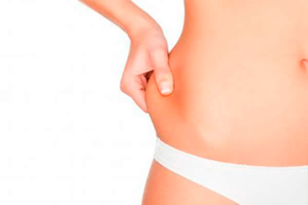

Mesoterapia
Mesoterapia facial, corporal y capilar:Estimula la generación de colageno y elastina por el propio procedimiento y mediante la utilización de fármacos que generan tensión de la piel y mejoría importante de la celulitis entre otros multiples usos
Conocer más